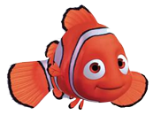

Пирск - син Краша. Перейняв його манеру мови на молодіжному сленгу.

Немо - син Марлина, допитливий і рухливий. Один з його плавників недорозвинений.
Дорі - блакитний хірург, балакуча, наївна і цілеспрямована. Страждає на тяжку форму склерозу з дитинства, але найважливіше все ж пам'ятає.
Тед - восьминіг-грімпотевтіс, батько Блискітки.
У пошуках...
H
E
M
O